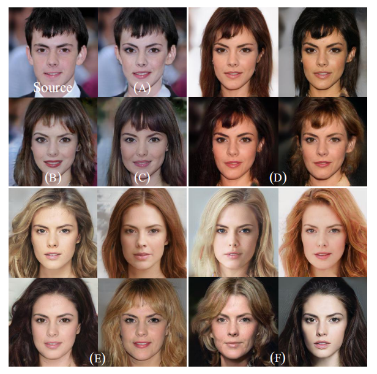

StarGAN v2: Diverse Image Synthesis for Multiple Domains
latent code+条件GAN
Introduction
一个好的\(image~to~image\)图像翻译模型应当满足生成结果多样化与模型的可扩展性。\(StarGANv1\)可以完成第二个任务：相比于\(CycleGAN\)，它可以只用一个生成器完成多个域的图像翻译，而不需要训练\(n(n-1)\)只能完成2个域图像翻译的生成器。但是对于第一个任务，多样性一般是非条件\(GAN\)的一项指标。想要由条件\(GAN\)的生成器得到多样性的生成结果，需要引入随机性。\(StyleGAN\)中的\(latent~code\)是一个好的参考。
Method
回想一下\(StyleGANv1\)是怎么在生成器中指导目标域的，它其实是在\(3*256*256\)的输入图像后直接拼接一个\(domain~mask\)，使输入变成\(8*256*256\)。训练的时候，是随机挑选一个\(domain~label\)做图像翻译，计算损失。
\(StyleGANv2\)与\(StyleGANv1\)的不同之处在于，\(domain~mask\)不再是一个人为指定的\(256*256\)的全是1的矩阵，而是通过神经网络生成\(style~code\)。\(StyleGANv2\)可以完成两个任务，第一个是\(domain\)指导的图像翻译（这一点v1也能够完成，不过多样性差点）；第二个则是\(image\)指导的图像翻译，这是一个新功能，效果见下图：

Experiments
这篇文章的结果分析十分清楚，类似于\(Yolo~v2\)论文，展示了改变各种结构后模型效果的变化。下图中，\(A,B,C\)展示了\(StarGANv1\)加入各种技巧后的结果，此时模型还局限于条件\(GAN\)：一张输入只能得来一张输出；\(D\)是输入图像加入噪声后的结果，多样性有了，但是不够好，只有颜色的改变而没有结构的改变：例如发型没变化；引入映射网络之后，多样性显著提升，如图\(E\)；\(F\)是引入了之前提到的那个锦上添花的损失后的结果，可以看到多样性变强了一些。

论文还评估了生成图像的质量，例如\(FID,LPIPS\)指标。寒假有空整理下这些评判标准的计算方式。